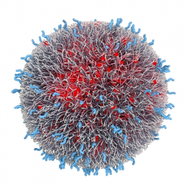
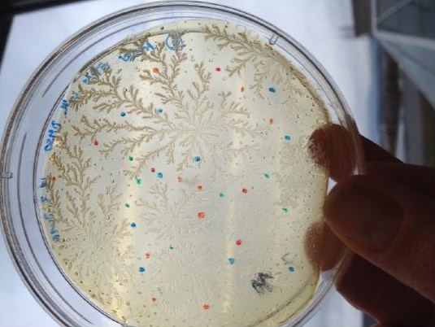

Projects
Exploring the Genome Architecture with Next-generation Sequencing
 One of the breakthroughs in molecular biology was the discovery of the genetic code, because DNA of every organism hides important information dictating not only its future, but also revealing its ancient evolutionary past. Nowadays we are facing a rapid development of the new generation sequencing, followed by a multitude of novel applications in biology and medicine. For example, it is possible to sequence several human genomes in a matter of days. The ability to sequence the whole genome of many related organisms has allowed large-scale comparative and evolutionary studies to be performed that were unimaginable just a few years ago. In terms of evolution, the next generation sequencing enabled us to investigate depth of information beyond the capacity of traditional DNA sequencing technologies and therefore showed that variations in the genomic structure, such as variation in copy numbers and inversions of DNA sequence, are a major source of human evolution and phenotypic variation.
One of the breakthroughs in molecular biology was the discovery of the genetic code, because DNA of every organism hides important information dictating not only its future, but also revealing its ancient evolutionary past. Nowadays we are facing a rapid development of the new generation sequencing, followed by a multitude of novel applications in biology and medicine. For example, it is possible to sequence several human genomes in a matter of days. The ability to sequence the whole genome of many related organisms has allowed large-scale comparative and evolutionary studies to be performed that were unimaginable just a few years ago. In terms of evolution, the next generation sequencing enabled us to investigate depth of information beyond the capacity of traditional DNA sequencing technologies and therefore showed that variations in the genomic structure, such as variation in copy numbers and inversions of DNA sequence, are a major source of human evolution and phenotypic variation.
In this project participants will be exposed both to the “dry” and “wet” molecular biology. First, they will learn to use bioinformatics tools to assess large scale data. The starting point will be genome and transcriptome sequencing data of different primates, and the main task will be to use given information to find structural variations such as deletions, duplications and translocations in the genome of the respective species. Further on, we will move on to the lab and experimentally validate the existence of interesting candidates by PCR and gel electrophoresis Finally, in order to understand how variations in the genome architecture may lead to phenotypic variation, we will look for the connection between these structural variations and possible effects on gene expression.

Matilda Males
EMBL Heidelberg, Germany
Matilda obtained her bachelor’s degree in molecular biology at the University of Zagreb, followed by a master’s degree at University of Heidelberg in Germany. Now, she is doing a PhD in genomics at EMBL Heidelberg, being particularly interested in the role of the non-coding genome in the embryonic development. When not working, she can be found swing dancing, doing yoga or just chilling with a good book. Matilda is participating in the Summer School of Science since 2006, twice as a high-school student and later twice as a workshop leader.
Jelena Tica
EMBL Heidelberg, Germany
Jelena is currently doing a PhD in molecular biology at EMBL Heidelberg and she is particularly interested in genomic structural variations, cancer genomics and genome evolution. Before she moved to Germany, she obtained her B.Sc. and M.Sc. degree in molecular biology at University of Zagreb. In her free time, Jelena likes to read books, watch movies and play computer games. Also, she goes to the gym, learns German and writes about beauty-related inventions in her blog.
Shedding Light on Fractals
We live in a three dimensional world, so we know what a three dimensional object is (for example, a ball). We can also understand two dimensional (a circle), even one dimensional objects (a line), but would it make any sense to talk about non-integer dimensions, such as 2.65 or 1.3? It turns out it would; such objects are called fractals. They can be easily found in nature if you know where to look. Many different physical processes, such as diffusion, aggregation and electrical discharge, result in fractals. Through the analysis of the incipient structure we can gain valuable information on the underlying microscopic process.
In this project we will investigate the properties of fractals arising from aggregation of colloidal particles using light scattering techniques which are used in many modern experiments. In the course of the project we will design and construct the apparatus, write the necessary software and conduct a numerical simulation of the aggregation process. Through the comparison of the experiment and the simulation we will gain information on the process governing the growth of the fractal cluster.
Marija Doslic
Faculty of Science, University of Zagreb, Croatia
Marija is a student of physics at the Faculty of Science at the University of Zagreb, where she is currently working on her diploma thesis in the field of high Tc superconductors. She has participated in high school competitions both as a student and as a mentor. In her spare time she enjoys reading newspapers (all of them), crocheting, travelling and hiking with friends.
Veronika Sunko
Faculty of Science, University of Zagreb, Croatia
Veronika is a master student of physics at the Faculty of Science, University of Zagreb. She recently worked on the dynamics of glassy systems, and is currently working on her diploma thesis concerning complex magnetic systems at the Institute of Physics, Zagreb. She likes hiking, reading and experimental cooking.
Targeting Cancer Cells using Functionalized Nanoparticles
One of the major problems in cancer treatment is that cancer cells are hard to distinguish from the healthy cells. This makes it difficult to design a drug that kills only cancer cells but does not affect the healthy ones. The cancer cells do however tend to overexpress certain membrane receptors. Membrane receptors are special proteins located in the cell membrane, which allow the cell to communicate with the outside world. In the recent years a novel idea based on multivalency allows us to sharply target only cells with receptor population above a certain threshold. A multivalent particle is a particle that can form many simultaneous bonds. Therefore, we can design a drug that attaches only to cancer cells but not to healthy ones. Modern computers allow us to test and refine these ideas with simulations before experimenting with new drugs on actual patients.
In this project we will be using Monte Carlo computer simulations to design a good targeting system for drugs. Specifically, we will focus on targeting cancer cells. The nature of this problem is very interdisciplinary and we will explore relevant concepts from physics, chemistry and molecular biology. We will aim to cure our virtual patient by designing a multivalent nanoparticle that will only attach to cancer cells (thus killing them) but not to normal cells. We will design the nanoparticle properties, how many simultaneous bonds can it support and what should be the dosage (how many nanoparticles should we administer to the patient).

Tine Curk
University of Cambridge, UK
Tine is a PhD student in computational chemistry at the University of Cambridge, UK. He received bachelor and master’s degrees in physics from the University of Maribor. Tine is an expert on computer modeling of micro scale systems, such as polymers and nanoparticles. His main research tools are statistical mechanics and Monte Carlo simulations. In his free time Tine rows, chases rabbits, makes creative sandwiches and enjoys good music.
Human Microbiota: Friends or Foes?
Our body hosts more than a thousand different varieties of microorganisms with a complex distribution of microbial communities within specific sites. The community of microbes colonizing the human body is referred to as microbiota. These microbiota play essential roles in energy metabolism, regulating our immune system and more importantly act as protective shield preventing pathogenic bacteria from colonizing our body. Disruption of the microenvironment and the colony architecture comprising of specific species of microorganisms can often disrupt the delicate balance of our local microbiota leading to harmful side effects or even diseases. Such imbalance in microbiota is associated with many well-studied disorders such as autoimmune disease, obesity, eczema and psoriasis.
In an effort to make the students appreciate this inter-individual and also intra-individual microbial diversity, this project will offer an opportunity to learn basic microbiology technics like bacterial cultivation, Gram staining and biochemical tests that will help them identify their own bacteria. Furthermore the students will get to know some biotechnology techniques like bacterial transformation, DNA extraction, PCR and transgenes detection. In the course of this project, the students will be challenged to ask questions and to use their critical thinking.
Marta Figueiredo
University of Zurich, Switzerland
Marta did her Master’s degree in Pharmaceutical science at the University of Porto, Portugal. Working as a pharmacist, she missed the excitement of learning new things, so she went back to academia. She is currently working as a Ph.D student on the topic of kidney physiology. Besides science, she enjoys outdoor activities and meeting new people.
 It is a part of human nature to connect and be connected. To establish a bond with another human being or a group we need to be open, honest and ready to explore. From a good connection comes understanding and the ability to create things and ideas together. That is when the whole truly becomes greater than the sum of its parts. This is why we will devote the first session to establishing connections! In an active, moving and friendly manner, having lots of fun along the way.
It is a part of human nature to connect and be connected. To establish a bond with another human being or a group we need to be open, honest and ready to explore. From a good connection comes understanding and the ability to create things and ideas together. That is when the whole truly becomes greater than the sum of its parts. This is why we will devote the first session to establishing connections! In an active, moving and friendly manner, having lots of fun along the way.